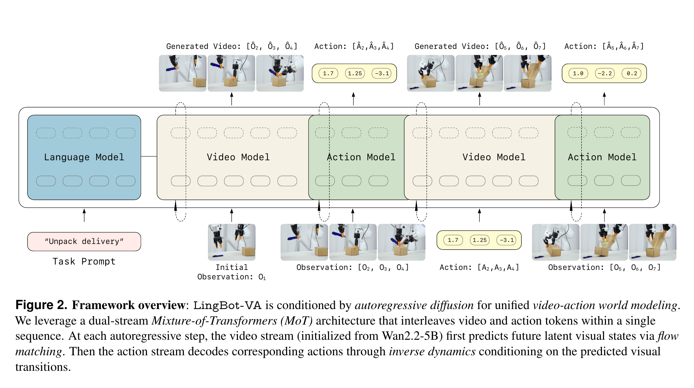

Causal World Modeling for Robot Control
Li 等 · LingBot-VA · 2026 技术报告 · arXiv:2601.21998 v2 · Zotero SZZ5L2LX
LingBot-VA 用因果顺序明确规定“先预测未来视觉转移，再由 inverse dynamics 解码动作”：Wan2.2-5B 初始化的宽视频流负责 flow-matching 世界预测，窄动作流负责控制，两条 Mixture-of-Transformers 流在单一自回归序列中交织训练。
§1 Introduction：为什么 joint video-action 还必须满足时间因果性
许多 VLA 把当前观察直接压成动作 chunk，让一个前馈网络同时承担场景理解、动力学和控制，表示容易纠缠。已有 joint WAM 引入视频预测，却常在固定 chunk 内使用双向 attention：未来 token 可以影响较早预测，这在离线训练中方便，却不符合现实中“现在只能由过去决定”的生成顺序，也削弱长时记忆和真正的闭环 rollout。
LingBot-VA 将视频与动作 token 交织成连续 latent 的自回归序列，并由 Mixture-of-Transformers（MoT）为两模态提供专用计算、共享 attention。每一步同时想象未来视觉和解码对应动作，causal mask 与 KV cache 保存历史。为克服视频 diffusion 慢的问题，动作 decoder 被训练为能从部分带噪视觉 latent 读取语义结构，系统再用异步流水线并行下一步预测与当前动作执行。
展开原文 · 核心设计
“interleave video and action tokens into a single autoregressive sequence”
§2 Related Work：从 chunk-level 双向建模到 causal rollout
直接 VLA 的动作生成不显式模拟未来；UVA/UWM 等 chunk-based video-action diffusion 虽联合建模，但 chunk 内双向注意可能让未来泄漏到过去；离线视频生成器产生子目标后再控制，则仍是级联且闭环频率受限。LingBot-VA 选择自回归 chunk，使每个 video-action 片段只依赖历史。
它与 GR-1/GR-2 的 autoregressive joint modeling 都强调序列统一，但改用连续 latent flow matching 与 MoT；与 DreamZero 都从大视频 diffusion backbone 继承先验，但 LingBot-VA 更突出 causal consistency、KV-cache 长时上下文和异步部署系统，而不是把重点放在 zero-shot motion split。
§3 为什么强调 causal world modeling
- World step
- 根据过去观测与动作预测下一段视觉 latent，保持“现在只依赖过去”。
- IDM step
- 用预测视觉转移、观察历史和动作历史推断可执行 action chunk。
- Action history
- 对绝对位姿控制尤其重要，它隐式记录机器人构型与已执行路径。
§4 视频—动作交织的双流 MoT

1. 读取任务与历史
因果 mask 确保当前预测不看到未来真实帧。
输入是什么：当前任务提供的原始观测、指令、机器人状态或训练数据。先明确这些输入，才能判断后面的结论是否用了部署时拿不到的信息。
这一步究竟做什么：本步骤执行“读取任务与历史”。具体来说，因果 mask 确保当前预测不看到未来真实帧。 模型从相同起点产生候选未来，后续模块再检查这些未来是否符合条件、物理规律或动作需要。
输出到哪里：一个或多个候选未来、动作或轨迹，以及必要的中间状态。这个结果会交给下一步“预测未来视觉 latent”继续处理。
为什么不能省略：它把未经处理的原始问题变成后续模块可以计算的输入，是整条链路的起点。
2. 预测未来视觉 latent
预训练视频流提供大规模物理与语义先验。
输入是什么：来自上一步“读取任务与历史”的产物：一个或多个候选未来、动作或轨迹，以及必要的中间状态。本步骤还会按论文设置读取当前条件、时间步或训练信号。
这一步究竟做什么：本步骤执行“预测未来视觉 latent”。具体来说，预训练视频流提供大规模物理与语义先验。 模型从相同起点产生候选未来，后续模块再检查这些未来是否符合条件、物理规律或动作需要。
输出到哪里：一组比原始输入更紧凑的内部特征；它不是最终动作或画面。这个结果会交给下一步“从视觉转移解码动作”继续处理。
为什么不能省略：模型不能高效地直接在所有原始像素和长序列上推理；这一步把信息压成后续模块能处理、比较和复用的形式。
3. 从视觉转移解码动作
窄动作流专注低维控制，不复制 5B 视觉容量。
输入是什么：来自上一步“预测未来视觉 latent”的产物：一组比原始输入更紧凑的内部特征；它不是最终动作或画面。本步骤还会按论文设置读取当前条件、时间步或训练信号。
这一步究竟做什么：本步骤执行“从视觉转移解码动作”。具体来说，窄动作流专注低维控制，不复制 5B 视觉容量。 这个动作会真正改变环境，所以系统还要读取执行后的新观测，检查模型预期与现实之间的差距。
输出到哪里：经过本步骤处理、含义更明确的中间结果。这个结果会交给下一步“交替推进序列”继续处理。
为什么不能省略：它承担上下两步之间的接口；缺少它，前一步产生的信息无法以正确格式或正确含义传到下一步。
4. 交替推进序列
新观察与动作成为下一 chunk 的因果历史。
输入是什么：来自上一步“从视觉转移解码动作”的产物：经过本步骤处理、含义更明确的中间结果。本步骤还会按论文设置读取当前条件、时间步或训练信号。
这一步究竟做什么：本步骤执行“交替推进序列”。具体来说，新观察与动作成为下一 chunk 的因果历史。 这个动作会真正改变环境，所以系统还要读取执行后的新观测，检查模型预期与现实之间的差距。
输出到哪里：经过本步骤处理、含义更明确的中间结果。这是图中这条链路的最终产物，随后会进入真实执行、模型更新或指标评测。
为什么不能省略：它把前面得到的内部结果落实为可执行动作、可训练模型或可解释指标，完成从方法到结果的最后一步。
§5 Flow dynamics 与 inverse dynamics
- $\mathcal L_{dyn}$
- 条件 flow matching 学习未来视频 latent 的速度场。
- $\mathcal L_{inv}$
- 动作流从干净/带噪视觉转移恢复动作，建立视觉变化到控制的逆映射。
- Causal video VAE
- $z_t=E(o_t\mid o_{
§6 为什么还需要系统级异步推理
§7 研究价值与边界
§8 实验归因与复现：因果结构、MoT 与系统并行要分开验证
最小可信复现清单
- 画出 interleaved token 顺序、chunk 边界、causal mask 和 KV-cache 生命周期。
- 列出 video/action expert 的层数、共享 attention 与参数路由。
- 报告 partially noisy latent 的训练采样范围和部署停止步。
- 区分模型单步延迟、稳态异步吞吐、真实控制频率与观察陈旧度。
- 在同硬件上比较同步、异步、无 KV-cache 和双向 attention 版本。
LingBot-VA 把世界模型从离线辅助目标推进为真正按时间因果滚动的控制器；模型结构和异步系统共同决定它是否能闭环。